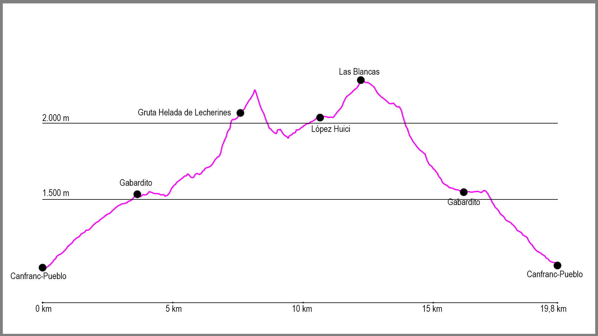

Nuestro recorrido comienza al borde de la carretera N-330 en Canfranc-Pueblo, justo en la parada de autobús en dirección Astún-Jaca. En este punto cogeremos un camino que parte desde una rampa sobre un muro de hormigón que nos conducirá por el barranco de Los Meses.
El inicio del camino es muy cómodo. El sendero asciende primero por el vivero de Los Meses para después cruzar por un dique el barranco y dejarnos desde ese momento en su margen derecha. La subida, muy tendida en todo momento, nos llevará a la fuente la Pajeta, para poco después dejarnos en la pista que nos conducirá al punto de retorno. Cuando llegamos a ella, tenemos que girar a nuestra derecha, ascendiendo desde este momento por la pista forestal hasta Gabardito. A mitad de este tramo de subida encontraremos la fuente de Los Abetazos, lugar donde podemos tomar agua.
Una vez llegamos a la pradera de Gabardito, pasaremos por debajo de un enorme árbol y en ese momento seguiremos las marcas de GR (blancas y rojas) hasta llegar al refugio forestal de Gabardito. Justo aquí, continuaremos un poco más la subida para llegar a un punto donde la GR11 gira a nuestra derecha, donde baja para cruzar un barranco. Lo cruzaremos y desde este punto el camino asciende cómodamente y sin ninguna complicación durante varios kilómetros. Simplemente tendremos que seguir la traza y las marcas de GR hasta llegar a la Majada de Lecherines.
Llegados a este punto solo nos quedará la última subida. Tras cruzar el barranco del Campón y bajar hasta la majada, los pies nos llevarán hacia la derecha, pero nosotros nos dirigiremos hacia el refugio que veremos en el llano, donde podremos coger agua en un manantial en la parte norte del edificio. Una vez hayamos repostado buscaremos la canal que en dirección noreste aparecerá delante de nosotros. Una vez en la base de la misma, la pendiente es cada vez más empinada. Ascenderemos por ella, por la traza del sendero, hasta llegar a una pedrera y a un punto donde se ensancha la canal. Aquí dos variantes saldrán de nosotros, pero tomaremos el camino y la canal de la izquierda, en dirección norte, para tras ascender el primer tramo llegar a dar vista a una zona de piedras y hierba.
En este punto, seguiremos este pequeño valle nuevo en dirección norte pegados a la roca de la derecha, para tras unos 200 metros llegar a la puerta de la Gruta Helada de Lecherines, a nuestra derecha. Desde aquí seguiremos en dirección norte la ancha canal de hierba que tenemos delante nuestra hacia la punta de Tortiellas. Cuando ya hayamos ascendido casi hasta la cima, tendremos una gran roca gris a nuestra izquierda en forma de menhir, a la cual daremos vuelta por su derecha en dirección oeste. Aquí empieza un primer tramo de bajada de hierba, que puede resultar resbaladiza si está húmeda, y que nos conduce hasta una gran pedrera que nos llevará primero hacia el suroeste y finalmente hacia el sur para descender este tramo.
Cuando el camino comienza a llanear llegaremos a una gran piedra en forma de cubo que dejaremos a nuestra izquierda para al poco de pasarla girar a nuestra derecha y afrontar una corta pero técnica subida. Desde aquí el camino empieza a estar marcado por una gran cantidad de hitos y al principio baja entre pequeñas simas, para una vez el terreno cambie a hierba empezar a girar en dirección noroeste para salvar varias pequeñas colinas y llegar así a coger la GR11 que sube desde Gabardito y que hemos dejado con anterioridad. Al llegar a ella seguiremos de forma ascendente para llegar al poco tiempo al refugio de López Huici.
Desde aquí cogeremos la pista que sale de la misma puerta del refugio para llegar, tras apenas un kilómetro hasta el collado de la Magdalena. Aquí dejaremos la pista a la derecha y cogeremos la cresta que en dirección sur separa los términos de Borau y Aisa. Seguiremos por ella hasta llegar a la punta de Las Blancas, desde donde divisaremos un edificio blanco. Giraremos a nuestra izquierda para descender hasta él y empezaremos a bajar por un camino que sale en dirección este hacia el barranco de la Añaza.
El camino desciende cómodamente por el valle, primero por unas campas de hierba y después entre arbustos hasta que llegamos al barranco que tuvimos que cruzar al inicio de la ruta, en la majada de Gabardito. Volveremos cruzarlo, esta vez en dirección sur, para tras subir la salida del mismo continuar recto obviando las marcas de GR.
Tras unos 300 metros donde el camino no está muy claro, llegaremos a una zona de bosque donde lo podremos seguir sin dificultad. El camino mantiene altura durante un buen rato antes de llegar a una antigua acequia, donde la atravesaremos y rodearemos una zona llana con una gran roca a nuestra derecha.
Pasados este punto comienza nuestro descenso hasta el punto de inicio. Toda la bajada transcurre por un cómodo sendero que nos conducirá hasta el punto donde salimos en nuestra ascensión a la pista. Al llegar a ella giraremos a nuestra izquierda para apenas 10 metros después volver a girar a nuestra derecha y en este punto coger el camino que tras pasar de nuevo la fuente la Pajeta y el vivero de Los Meses nos llevará al punto de partida.
